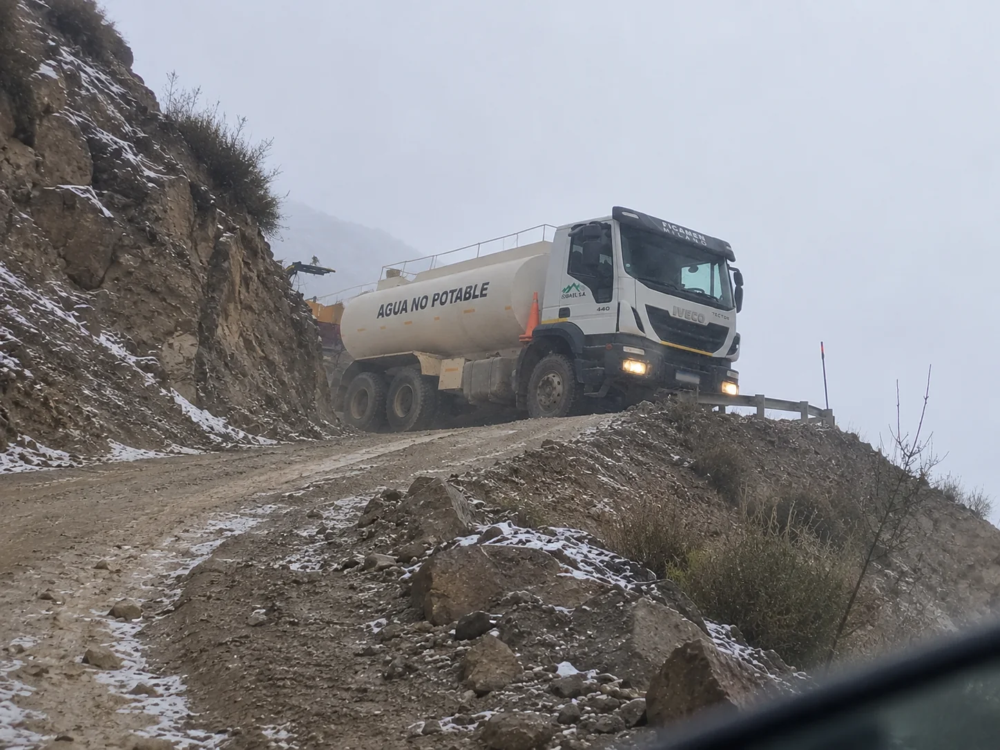
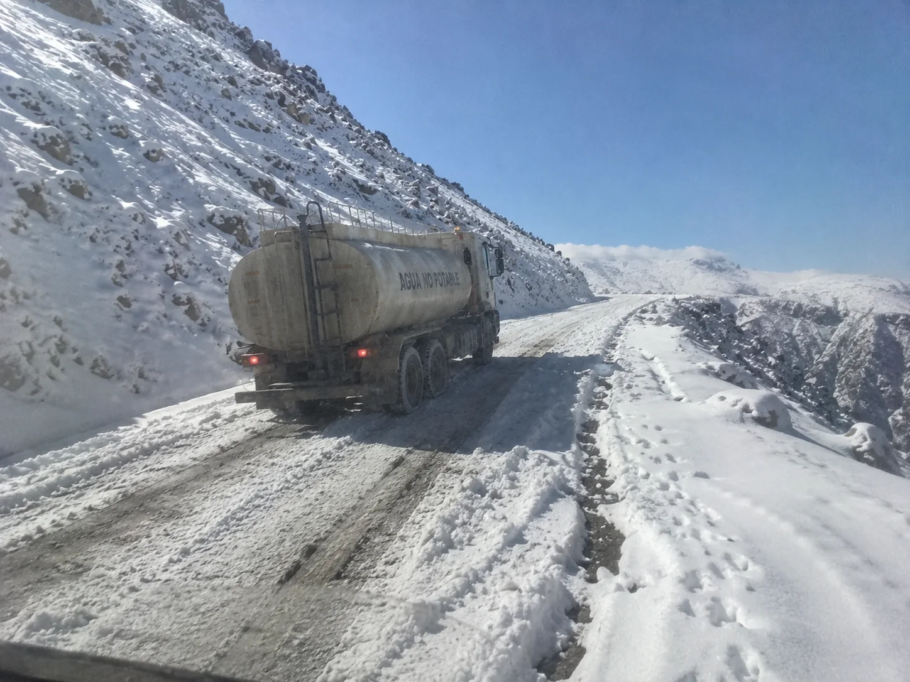
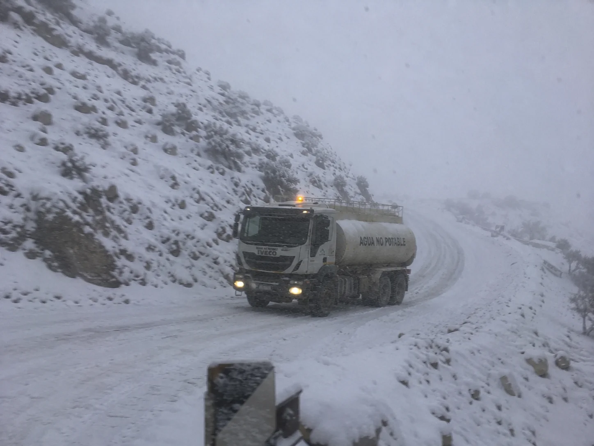
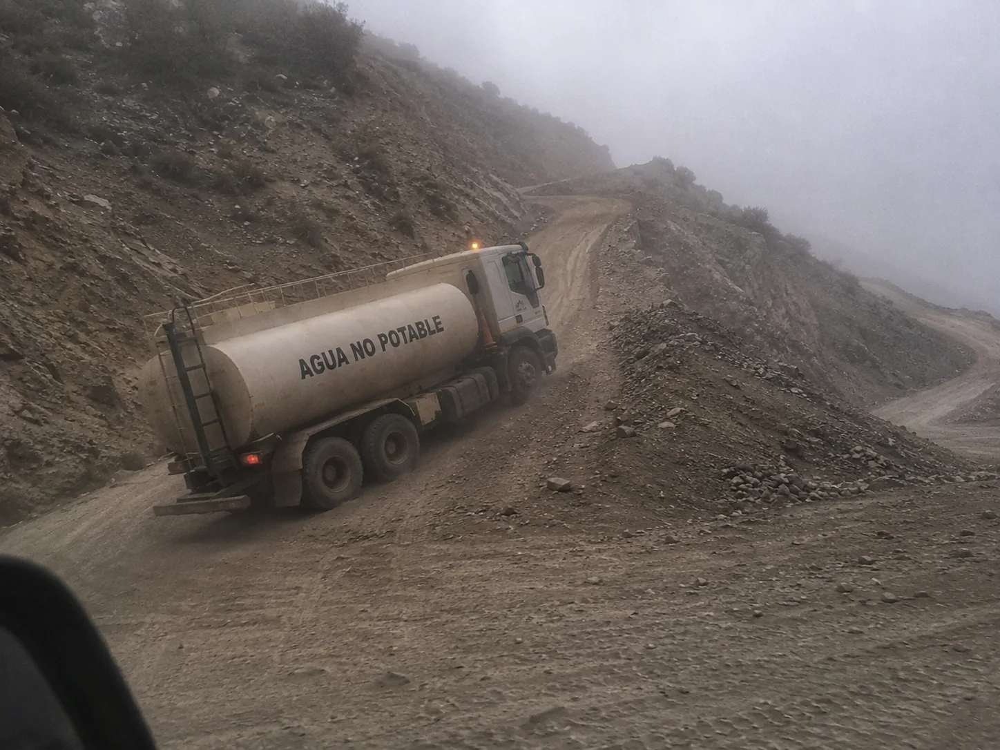

Abastecimiento minero en zonas remotas de San Juan
Que a tu operación nunca le falte lo que necesita, aunque el frente esté al final de un camino que un transporte común no hace. Llevamos materiales, módulos e insumos hasta los puntos de difícil acceso de la cordillera, con flota propia y conductores que conocen cada ruta. Más de 20 años operando en San Juan, con bases en Rawson y Calingasta.
En una operación remota, lo que no llega frena el frente.
Cuanto más lejos está el frente, más frágil se vuelve la cadena de suministro. Un material que no llega, un insumo que se demora, y la cuadrilla se queda esperando. El último tramo —caminos de cornisa, nieve, accesos sin señalizar— es justo donde la logística común se planta.
ISMAEL S.A. lleva los materiales, módulos e insumos de la operación hasta el punto donde se necesitan, con flota propia y gente con experiencia real en la cordillera. Coordinamos cada entrega para que el abastecimiento no sea una variable de riesgo.




El último tramo, resuelto
Donde el camino se angosta y el asfalto se termina, seguimos. Nuestras unidades entran a los accesos de montaña —cornisas, ripio, nieve— que separan la ruta principal del frente de trabajo.
Al ser flota y conductores propios, planificamos cada viaje según la carga y el estado del camino, sin depender de operadores de otras provincias.
Lo que la operación necesita, hasta donde lo necesita
Coordinamos el abastecimiento al ritmo de cada proyecto, desde la base hasta el frente más alejado.
Materiales y estructuras
Traslado de materiales, perfiles, estructuras y equipamiento hasta el punto de operación.
Módulos e insumos
Reposición de los módulos, insumos y consumibles que la operación necesita para no frenar.
Cargas sobredimensionadas
Cuando la carga lo requiere, con los permisos correspondientes y camionetas guía.
Última milla en montaña
Accesos no convencionales, caminos de cornisa y nieve que un transporte común no hace.
Hasta el último punto de la operación.
Materiales, módulos e insumos donde el frente los necesita, con flota propia y gente que conoce la cordillera. El abastecimiento deja de ser una preocupación.
Por qué tercerizar el abastecimiento con un operador sanjuanino
La diferencia entre un operador local y uno de afuera se mide en horas de movilización y en quién responde cuando falta algo en el frente.
Flota propia todo terreno
Control directo de cada unidad. Si una falla, según disponibilidad sale otra: el abastecimiento no se corta.
Presencia local en San Juan
Bases en Rawson y Calingasta: respuesta en horas, sin depender de operadores de otras provincias.
Choferes con experiencia en rutas sin señal
Conductores acreditados, que conocen las picadas y los caminos de acceso a cada frente, incluso sin cobertura de celular.
Seguros de carga al día
ART, responsabilidad civil, seguro de carga y habilitaciones de transporte vigentes.
+20 años en alta cordillera
Más de 20 años llegando a frentes de perforación, campamentos y proyectos de exploración en San Juan.
Seguimiento de cada envío
Monitoreo GPS de la unidad hasta la entrega: sabés cuándo llega el abastecimiento al frente.
¿Necesitás asegurar el abastecimiento de tu operación?
Contanos qué mueve tu operación, hasta dónde y con qué frecuencia. Te respondemos con una propuesta concreta.
Ver todos los servicios →